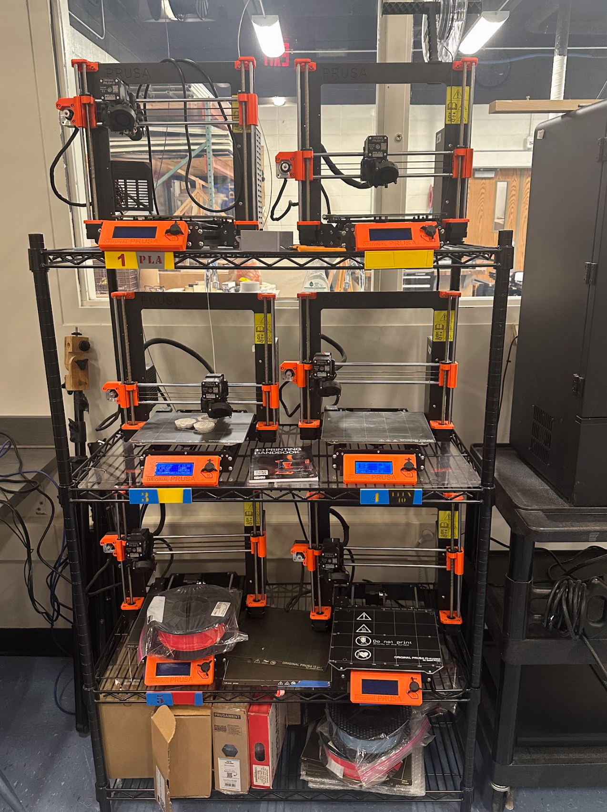

Prusa 3-D Print Farm
Prusa MK3's are reliable 3-D printers that run around the clock to print student parts. These printers use Fused Deposition Modeling (FDM) with PLA, and we also use ABS when extra strength is needed.
- Build volume: ~256 × 256 × 256 mm
- Nozzle: 0.4 mm
- Materials: PLA, ABS (plus others)